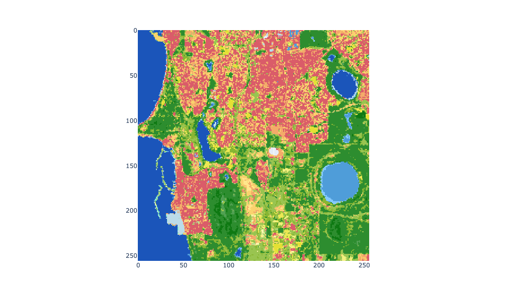

Static maps are rendered images with detail and styling to highlight a specific location, feature, or phenomenon. However, they are limited. A static map of a wide-area will omit local detail, and a static map of a small area will omit wide-area context. They are not interactive.
To addresss these limitations, and using web technologies such as making HTTP requests, web maps are interactive maps that update the information shown in response to user input (zooming in and out, panning).
To generate a web map your web browser, or another client application such as an app on a mobile device, makes a HTTP request to a server to GET a web map. The client’s HTTP request will include some parameters that describe the map it wishes to receive such as the location and zoom level. In response, the server will either generate the map dynamically (i.e. query a spatial database and render an image) or retrieve a pre-generated map image and respond by sending the map image to the client. Often, this image is in JPEG or PNG format. The client will then render the map in the client application that made the call to the web map server.
As you interact with the web map on your display (e.g. with your mouse zooming in and panning), the client will send new requests to the server which will respond by sending updated image data. This is what makes web mapping interactice.
Web maps
Quin (2020) describe a web map as comprising three components or layers:
basemap: underlying spatial layers designed to provide geographic context. These are often pre-rendered map tiles that fuse together several spatial layers (e.g. roads, water bodies, buildings) that are not the main focus of the map.
thematic elements: geographic features that are the main focus of the map and are rendered on top of the basemap layers. Often, these elements are styled to emphasise patterns in the data or distinguish these elements from the basemap. These could be layers that you can toggle on and off.
interactive elements: there can be interactive elements rendered on a web map that provide extra information in response to user input (e.g. hover or popup text windows).
We can also think of there being three types of web maps:
dynamic: dynamic web map images are rendered on demand following a client request by a map server. Depending on how the server is configured, it can generate bespoke web maps for a particular client from spatial data.
tiled: tiled web map images are pre-generated and stored in cloud storage or in a database and a server retrieves the appropriate image tiles to fill the client’s web map, as indicated by parameters in the client request, and sends them to the client.
client-generated: coordinates representing a geometry (e.g. a GeoJSON object) are sent to the client and a client application, such as a web browser, renders the geometry on a web map.
In reality, we often mix these three different types of web maps to produce a final composite web map. For example, dynamic map servers can generate tiles creating the “illusion” of a tiled map output. Or, we might use a pre-generated tiled basemap to provide geographic context and then use a dynamic web map to render “real-time” information in a spatial layer on top of it. An example of this is visualising traffic information with traffic-light shades on top of Google Maps pre-generated basemap tiles.
Task
The focus of this lab is to provide an introduction to web mapping technologies, highlight their strengths and limitations for particular contexts, and provide some recipes for how you can request web map data using Python. First, we will demonstrate how to request web map layers from servers that implement the Web Map Services (WMS) specification (dynamic web maps); a range of data providers make their data accessible as WMS services (e.g. Digital Earth Australia and public datasets in Western Australia via the Data WA Data Catalogue). Second, we will explore the structure of pre-generated tiled web maps based on XYZ map tiles or “slippy” maps which are often used for generating basemap images (e.g. in OpenStreetMap or Google Maps). Finally, we will demonstrate how you can dynamically generate basemaps from high-resolution remote sensing data stored in cloud-optimised GeoTIFF (COG) files.
Setup
Run the labs
You can run the labs locally on your machine or you can use cloud environments provided by Google Colab. If you’re working with Google Colab be aware that your sessions are temporary and you’ll need to take care to save, backup, and download your work.
Working in Colab
If you’re working in Google Colab, you’ll need to install the required packages that don’t come with the colab environment.
import osimport jsonimport geopandas as gpdimport pandas as pdimport plotly.express as pximport plotly.io as pioimport numpy as npimport requestsfrom skimage import ioimport pystac_clientimport planetary_computer as pcfrom pystac.extensions.eo import EOExtension as eofrom ipyleaflet import Map, TileLayer, WMSLayer, basemaps, LegendControl, SplitMapControlfrom traitlets import Unicode# setup rendererif'google.colab'instr(get_ipython()): pio.renderers.default ="colab"else: pio.renderers.default ="jupyterlab"
!pip install OWSLib
Requirement already satisfied: OWSLib in /opt/conda/lib/python3.10/site-packages (0.29.0)
Requirement already satisfied: requests>=1.0 in /opt/conda/lib/python3.10/site-packages (from OWSLib) (2.28.1)
Requirement already satisfied: lxml in /opt/conda/lib/python3.10/site-packages (from OWSLib) (4.9.2)
Requirement already satisfied: python-dateutil>=1.5 in /opt/conda/lib/python3.10/site-packages (from OWSLib) (2.8.2)
Requirement already satisfied: pyyaml in /opt/conda/lib/python3.10/site-packages (from OWSLib) (6.0)
Requirement already satisfied: pytz in /opt/conda/lib/python3.10/site-packages (from OWSLib) (2022.7)
Requirement already satisfied: six>=1.5 in /opt/conda/lib/python3.10/site-packages (from python-dateutil>=1.5->OWSLib) (1.16.0)
Requirement already satisfied: urllib3<1.27,>=1.21.1 in /opt/conda/lib/python3.10/site-packages (from requests>=1.0->OWSLib) (1.26.13)
Requirement already satisfied: charset-normalizer<3,>=2 in /opt/conda/lib/python3.10/site-packages (from requests>=1.0->OWSLib) (2.1.1)
Requirement already satisfied: idna<4,>=2.5 in /opt/conda/lib/python3.10/site-packages (from requests>=1.0->OWSLib) (3.4)
Requirement already satisfied: certifi>=2017.4.17 in /opt/conda/lib/python3.10/site-packages (from requests>=1.0->OWSLib) (2022.12.7)
from owslib.wms import WebMapService
Web Map Services (WMS)
Servers implmenting the Web Map Services (WMS) specification support dynamically drawn web maps. It is an Open Geospatial Consortium (OGC) specification that server-side applications implement to describe the requests they can receive to generate web map images on-demand for clients.
The client request to a WMS server indicates the location, extent, coordinate reference system, and potentially a range of other parameters that determine how the web map is generated and styled from spatial data (e.g. a spatial database). The server responds by sending a rendered image of the spatial data as a JPEG or PNG file.
As you move around and zoom in and out of your web map widget (e.g. in your browser), new requests are sent to the WMS server and it responds by generating new images and sending them back to the client to construct the web map in the user interface.
Recap quiz
Can you think of a disadvantage of dynamically generating web map images from spatial data in response to client requests?
If you move around quickly in your web map widget, you might generate lots of requests for the WMS server to handle (query a spatial database for relevant data, render spatial data into an image, and send the image back to the client). The server might not be able to keep up with the speed at which you are moving around in the web map widget and you will experience a lag. A lag could also be generated if a WMS server is handling requests from many different clients.
A client makes a request to a server implementing the WMS specification by sending a HTTP message to URL of the server. The client includes information for server to use when handling the request as query parameters appended to the URL. The WMS specification has a REQUEST parameter; when this is set to the value GetMap it will request the server to generate a web map image. Setting the REQUEST value to GetCapabilities will return a metadata about the WMS server. Values set for the REQUEST parameter indicate the WMS operation the server should undertake - you can see the list of operations here.
WMS GetMap operation
When requesting a GetMap operation from a WMS server, a client can specify some of the following query parameters:
layers - layers to display on the map
srs or crs - coordinate reference system of the map output
styles - styles that define how layers are rendered
bbox - bounding box for map extent in units of srs
A full description of query parameters for a GetMap operation can be found in the GeoServer docs.
Let’s demonstrate this by making a single request to a WMS server hosted by Digital Earth Australia to retrieve a web map image of the DEA Land Cover Calendar Year (Landsat) dataset.
This is an example request URL made by a web map client for land cover data for a region close to Perth (this URL was extracted from the Digital Earth Australia Map):
You can see the URL for the WMS server https://ows.dea.ga.gov.au/ and then several query parameters that define the GetMap request. The query parameters are appended after the domain name for the server as indicated by the ? symbol. Query parameters have a parameter=value format and are separated by the & symbol. You can find more information about query parameters here and here (you can also refer back to lab-6 for a recap on query parameters).
You can see query parameters indicating the format for the returned image (format=image/png), that the service to generate the image is WMS (service=WMS), that the request operation is GetMap (request=GetMap), and that the layer to render is defined by layers=ga_ls_landcover (a web map server will often be able to access a range of spatial datasets from which it can generate an image). There are also other query parameters that define the location for the image, the size of the image, and coordinate reference system. All this information is used by the server to generate the image returned to the client.
A requests object’s get() method has a params argument that can take a Python dictionary object specifying key:value pairs to convert to query parameters and append to the URL for a HTTP GET message.
# write the returned image data to a PNG fileos.makedirs(os.path.join(os.getcwd(), "week-7"), exist_ok=True)withopen(os.path.join(os.getcwd(), "week-7", "demo-dea-wms.png"), "wb") as dst: dst.write(r.content)# visualise returned imageimg = io.imread(os.path.join(os.getcwd(), "week-7", "demo-dea-wms.png"))px.imshow(img, height=600)
To verify that we setup the payload object defining the query parameters to Digital Earth Australia’s WMS server correctly, we can skip using the params argument in the get() method and pass in the full URL string.
r_fullstring = requests.get("https://ows.dea.ga.gov.au/?transparent=true&format=image/png&exceptions=XML&styles=level4&version=1.3.0&time=2020-01-01&service=WMS&request=GetMap&layers=ga_ls_landcover&bbox=12885448.480201874,-3786384.6331344917,12895232.419822376,-3776600.6935139894&width=256&height=256&crs=EPSG:3857")print(r_fullstring.status_code)withopen(os.path.join(os.getcwd(), "week-7", "demo-dea-wms-fullstring.png"), "wb") as dst: dst.write(r.content)# visualise returned imageimg = io.imread(os.path.join(os.getcwd(), "week-7", "demo-dea-wms-fullstring.png"))px.imshow(img, height=600)
200

The request we just made to the Digital Earth Australia WMS server to retrieve an image illustrates the process that a client web map application would go through to retrieve the data to fill the web map component of your display. As you move around the web map with your mouse (or touch and drag on a touchscreen) the client web map application generates these requests, sends them to the WMS server, and renders the returned image data.
The below video demonstrates using the Digital Earth Australia Map (https://maps.dea.ga.gov.au/) to render the DEA Land Cover Calendar Year (Landsat) data using WMS. You can see the client (here the Digital Earth Australia Map application in your web browser) making several of HTTP requests to the Digital Earth Australia WMS server to generate PNG images to create the map visualisation on the display.
It is rare that we’ll need to manually generate URLs with query parameters to send to WMS servers; we’ll use client web map applications, such as the DEA Map, for these tasks. Here, we’ll work with ipyleaflet, which is based on the Leaflet web mapping software.
We can use ipyleaflet to create a Map widget obejct using the Map() constructor function. The Map object is an interactive widget in our display that we can add web map layers to using the add_layer() method or add controls to using the add_controls() method.
When we create a Map widget obejct we can select a basemap, center location, and zoom level.
m = Map(basemap=basemaps.CartoDB.Positron, center=(-32, 117), zoom=9)m
To visualise the DEA Land Cover Calendar Year (Landsat) data on an ipyleaflet web map we first need to create a WMSLayer() object (WMSLayer() docs here).
To create a WMSLayer() object we need to pass in the url for the WMS server, specify the layers we want to render on the web map, and specify a format for the web map images and provide an attribution. Providing an attribution is often important as many WMS service licenses require an attribution for use.
We can use a Map object’s add_layer() method to add the WMS layer to the map.
dea_landsat_lc_wms = WMSLayer( url="https://ows.dea.ga.gov.au", layers="ga_ls_landcover",format="image/png", transparent=True, attribution="DEA Land Cover Calendar Year (Landsat)")m.add_layer(dea_landsat_lc_wms)m
We can change the style used to render the web map image data. The DEA Land Cover Calendar Year (Landsat) has a basic style which we can request from the server - note how we set the styles argument to "level3" below. This is an example of how our client, here the ipyleaflet Map object, has dynamically requested the WMS server to generate images for the web map display using a different visual style.
We can also create a LegendControl object by passing a dictionary object of legend element names and colours to the LegendControl() constructor function. We can then add the LegendControl object to the Map object. Controls are widgets that we can use to control how we interact with and interpret the map (e.g. zoom widgets, legends, split map, fullscreen etc).
# create WMS layer with level3 style for DEA Land Cover Calendar Year (Landsat)dea_landsat_basic_lc_wms = WMSLayer( url="https://ows.dea.ga.gov.au", layers="ga_ls_landcover",format="image/png", transparent=True, styles="level3", attribution="DEA Land Cover Calendar Year (Landsat)")# create dict to define legend elements and colourlevel_3_legend = {"Water": "#4d9fdc","Natural Bare Surface": "#f3ab69","Artificial Surface": "#da5c69","Natural Aquatic Vegetation": "#34bf79","Natural Terrestrial Vegetation": "#1f7912","Cultivated Terrestrial Vegetation": "#acbc2e"}# create LegendControl objectlegend = LegendControl(level_3_legend)# create a new map instancem = Map(basemap=basemaps.CartoDB.Positron, center=(-32, 117), zoom=9)# add WMS layer to mapm.add_layer(dea_landsat_basic_lc_wms)# add legend to the mapm.add_control(legend)# visualise the mapm
WMS GetCapabilities operation
The WMS GetCapabilities operation returns metadata about a WMS server to a client. A GetCapabilities response is an XML document with three sections:
service: metadata about the organisation providing the WMS server.
request: the request operations the server provides and the input parameters and response data formats for each operation.
layer: layers and coordinate systems the WMS server provides.
We can use GetCapabilities requests to retrieve information from the WMS server necessary for generating WMS layers in our web maps. Let’s make a GetCapabilities request to the Digital Earth Australia WMS server.
This response object contains the Digital Earth Australia’s WMS server’s metadata in XML format. We can access it via the text property of the response object. However, it’s quite long so we’ll print the first 2000 characters so you can see the format.
We can use the Python package OWSLib for easier querying and filtering of WMS server metadata. Passing in the URL for a WMS server to the OWSLib WebMapService() function creates a WebMapService_1_3_0 object that we can use to query a WMS service.
Can you use the above information that describes the DEA Water Observations Calendar Year (Landsat) WMS layer to create an ipyleaflet WMSLayer() object and add it to a new Map object?
The DEA Water Observations Calendar Year (Landsat) dataset is a satellite-derived water summary showing what percentage of clear satellite observations were detected as wet in a year. The legend for the WMS layer is below.
## ADD CODE HERE ##
answer
dea_wos_wms = WMSLayer( url="https://ows.dea.ga.gov.au", layers="ga_ls_wo_fq_cyear_3",format="image/png", transparent=True, styles="annual_wofs_frequency_3", attribution="DEA Water Observations Calendar Year (Landsat)")m = Map(basemap=basemaps.CartoDB.Positron, center=(-32, 117), zoom=10)m.add_layer(dea_wos_wms)m
Custom WMSLayer() objects
If the WMS server accepts other query parameters to define what data and styling is used to create web map images, we need to extend the base WMSLayer() class to create a custom class to handle the extra query parameters. A common extra query parameter that WMS servers implement is time which specifies a date or time for the underlying data used to generate the web map images.
The below code snipped demonstrates how to create a custom TimeWMSLayer() class with an extra time parameter.
class TimeWMSLayer(WMSLayer): time = Unicode('').tag(sync=True, o=True)
Split map controls
The Digital Earth Australia WMS server endpoint for the DEA Land Cover Calendar Year (Landsat) dataset accepts a time parameter that allows us to define a year to generate the web map images for.
ipyleaflet also provides an option for a SplitMapControl where one web map is rendered on the left panel and another on the right panel. We can create a SplitMapControl that displays the DEA Land Cover Calendar Year (Landsat) dataset for different years to allow us to see spatial patterns of land cover change over time.
First, we need to create two TimeWMSLayer objects that represent the DEA Land Cover Calendar Year (Landsat) dataset for 2020 and 2000. You can see that we pass in a date string to the time argument. These are instances of the custom class we created above.
# create WMS layer with level3 style for DEA Land Cover Calendar Year (Landsat)dea_2020_basic_lc_wms = TimeWMSLayer( url="https://ows.dea.ga.gov.au", layers="ga_ls_landcover",format="image/png", transparent=True, styles="level3", time="2020-01-01", attribution="DEA Land Cover Calendar Year (Landsat)")dea_2000_basic_lc_wms = TimeWMSLayer( url="https://ows.dea.ga.gov.au", layers="ga_ls_landcover",format="image/png", transparent=True, styles="level3", time="2000-01-01", attribution="DEA Land Cover Calendar Year (Landsat)")# create dict to define legend elements and colourlevel_3_legend = {"Water": "#4d9fdc","Natural Bare Surface": "#f3ab69","Artificial Surface": "#da5c69","Natural Aquatic Vegetation": "#34bf79","Natural Terrestrial Vegetation": "#1f7912","Cultivated Terrestrial Vegetation": "#acbc2e"}# create LegendControl objectlegend = LegendControl(level_3_legend)
We’re now ready to create a split map. First we create a Map object. Then we create a SplitMapControl object using the SplitMapControl() constructor function. The SplitMapControl() constructor function has left_layer and right_layer arguments; we’ll pass the TimeWMSLayer object for the 2000 land cover map (dea_2000_basic_lc_wms) to the left_layer and the TimeWMSLayer object for the 2020 land cover map (dea_2020_basic_lc_wms) to the right_layer.
Then we add the SplitMapControl object to the Map object. This should generate two linked web maps centred on Perth. If you pan around in the web map you should see land cover change between 2000 and 2020 as Perth has urbanised. See if you can spot other cases of land cover change around Western Australia (e.g. conversion of natural terrestrial vegetation to cultivated terrestrial vegetation).
# create a new map instancem = Map(basemap=basemaps.CartoDB.Positron, center=(-32, 116), zoom=11)split_map_control = SplitMapControl(left_layer=dea_2000_basic_lc_wms, right_layer=dea_2020_basic_lc_wms)m.add_control(split_map_control)m.add_control(legend)m
Data WA data catalogue
The Data WA Data Catalogue is a portal where you can search for public datasets for Western Australia. Many of these datasets are published as WMS layers - you can select WMS as one of the formats to filter datasets in the catalogue.
DPIRD publish their Generalised agricultural land use of Western Australia (DPIRD-003) layer via WMS. It is layer 1 at the WMS Server with the URL https://services.slip.wa.gov.au/public/services/SLIP_Public_Services/Farming/MapServer/WMSServer. It’s description is a layer of generalised land use regions based on their primary agricultural land use and we can display it on a web map via WMS with the following snippet.
dpird_landuse_wms = WMSLayer( url="https://services.slip.wa.gov.au/public/services/SLIP_Public_Services/Farming/MapServer/WMSServer", layers="1",format="image/png", transparent=True, attribution="Generalised agricultural land use of Western Australia (DPIRD-003)")m = Map(basemap=basemaps.CartoDB.Positron, center=(-32, 117), zoom=7)m.add_layer(dpird_landuse_wms)m
It is hard to interpret this map without a legend. The following dictionary object describes a legend for this map.
Recap quiz
Can you add the below dictionary object as a legend on a web map visualising DPIRD’s Generalised agricultural land use of Western Australia (DPIRD-003) WMS layer?
dpird_landuse_wms = WMSLayer( url="https://services.slip.wa.gov.au/public/services/SLIP_Public_Services/Farming/MapServer/WMSServer", layers="1",format="image/png", transparent=True, attribution="Generalised agricultural land use of Western Australia (DPIRD-003)")legend = LegendControl(dpird_land_use_legend)m = Map(basemap=basemaps.CartoDB.Positron, center=(-32, 117), zoom=7)m.add_layer(dpird_landuse_wms)m.add_control(legend)m
XYZ Tiles and slippy maps
Tiled web maps (or XYZ maps or “slippy” maps) are based on pre-generated images, drawn from spatial data, for a range of possible zoom levels and locations. Generally, these pre-generated images are JPEG or PNG files storing a 256 x 256 pixel image. Each image is a “map tile”.
The web map images that we rendered above are based on WMS layers and are generated dynamically by a server in response to client requests. In contrast, XYZ map tiles are already computed and are stored in a directory on the server or a cloud storage bucket. As a user pans around and zooms in and out on a web map, the server sends the required map tiles to fill the display.
As the tiles are pre-generated, XYZ map tiles are more performant than dynamic web maps. The performance benefits of XYZ web maps is particularly apparent with larger spatial datasets which would be computationally intensive to generate on-demand (e.g. high-resolution images satellite and aerial images).
Recap quiz
What are potential disadvantages of serving web map data as pre-generated XYZ map tiles?
There are storage costs associated with storing pre-generated map tiles for all locations and zoom levels (e.g. consider the storage costs associated with high-resolution RGB web maps with complete global coverage).
The up-front computational costs to generate the map tiles can significant and problematic if the map tiles need to be updated frequently.
As the map tile images are pre-generated it is not possible to customise their styling.
Despite these limitations, most basemaps (e.g. the satellite basemap in Google Maps or Bing Maps) which are used to provide geographic context are served as XYZ tiles because of the performance benefits.
XYZ map tiles are described by their zoom level (the Z) and coordinates (the X and Y) and comrpise a pyramid of images.
At zoom level 0 the entire world fits into a 256 x 256 pixel image in the web mercator projection system (EPSG:3857). Let’s get this most zoomed out map tile for OpenStreetMap. XYZ map tiles have a request format of https://{URL}/{zoom level}/{x coordinate}/{y coordinate}.png.
For OpenStreetMap this request would be https://tile.openstreetmap.org/0/0/0.png.
OpenStreetMap zoom = 0, x = 0, y = 0 https://tile.openstreetmap.org/0/0/0.png
At each zoom level, the number of 256 x 256 pixel map tiles increases by a factor of 4. The map tile coordinates always start with x = 0 and y = 0 in the top left.
OpenStreetMap zoom = 1, x = 0, y = 0, request = https://tile.openstreetmap.org/1/0/0.png
OpenStreetMap zoom = 1, x = 0, y = 1, request = https://tile.openstreetmap.org/1/0/1.png
OpenStreetMap zoom = 1, x = 1, y = 0, request = https://tile.openstreetmap.org/1/1/0.png
OpenStreetMap zoom = 1, x = 1, y = 1, request = https://tile.openstreetmap.org/1/1/1.png
At zoom level \(n\) there are \(2^{n} * 2^{n}\) map tiles. We can use this formula to compute the number of map tiles at different zoom levels. Zoom levels 0 to 18 are most common. We can see how the storage requirements for XYZ tiles at higher zoom levels quickly increases.
print(f"number of tiles at zoom level 0: {(2**0) * (2**0)}")print(f"number of tiles at zoom level 1: {(2**1) * (2**1)}")print(f"number of tiles at zoom level 2: {(2**2) * (2**2)}")print(f"number of tiles at zoom level 3: {(2**3) * (2**3)}")print(f"number of tiles at zoom level 4: {(2**4) * (2**4)}")print(f"number of tiles at zoom level 5: {(2**5) * (2**5)}")print(f"number of tiles at zoom level 6: {(2**6) * (2**6)}")print(f"number of tiles at zoom level 7: {(2**7) * (2**7)}")print(f"number of tiles at zoom level 8: {(2**8) * (2**8)}")print(f"number of tiles at zoom level 9: {(2**9) * (2**9)}")print(f"number of tiles at zoom level 10: {(2**10) * (2**10)}")print(f"number of tiles at zoom level 11: {(2**11) * (2**11)}")print(f"number of tiles at zoom level 12: {(2**12) * (2**12)}")print(f"number of tiles at zoom level 13: {(2**13) * (2**13)}")print(f"number of tiles at zoom level 14: {(2**14) * (2**14)}")print(f"number of tiles at zoom level 15: {(2**15) * (2**15)}")print(f"number of tiles at zoom level 16: {(2**16) * (2**16)}")print(f"number of tiles at zoom level 17: {(2**17) * (2**17)}")print(f"number of tiles at zoom level 18: {(2**18) * (2**18)}")
number of tiles at zoom level 0: 1
number of tiles at zoom level 1: 4
number of tiles at zoom level 2: 16
number of tiles at zoom level 3: 64
number of tiles at zoom level 4: 256
number of tiles at zoom level 5: 1024
number of tiles at zoom level 6: 4096
number of tiles at zoom level 7: 16384
number of tiles at zoom level 8: 65536
number of tiles at zoom level 9: 262144
number of tiles at zoom level 10: 1048576
number of tiles at zoom level 11: 4194304
number of tiles at zoom level 12: 16777216
number of tiles at zoom level 13: 67108864
number of tiles at zoom level 14: 268435456
number of tiles at zoom level 15: 1073741824
number of tiles at zoom level 16: 4294967296
number of tiles at zoom level 17: 17179869184
number of tiles at zoom level 18: 68719476736
XYZ tiles at higher zoom levels are rendered with progressively more spatial detail.
OpenStreetMap zoom = 5, x = 9, y = 20, request = https://tile.openstreetmap.org/5/9/20.png
We can convert latitude and longitude coordinates to XYZ map tile coordinates. The following is a convenient function from the OpenStreetMap Wiki for this task.
Perth’s coordinates in latitude and longitude are -31.9523 and 115.8613. Let’s pass these numbers into the deg2num() function to return the appropriate tile numbers.
# zoom level 6print(f"x coordinate and y coordinate for Perth at zoom level 6: {deg2num(-31.9523, 115.8613, 6)}")# zoom level 12print(f"x coordinate and y coordinate for Perth at zoom level 12: {deg2num(-31.9523, 115.8613, 12)}")
x coordinate and y coordinate for Perth at zoom level 6: (52, 38)
x coordinate and y coordinate for Perth at zoom level 12: (3366, 2432)
OpenStreetMap zoom = 6, x = 52, y = 38, request = https://tile.openstreetmap.org/6/52/38.png
OpenStreetMap zoom = 12, x = 3366, y = 2432, request = https://tile.openstreetmap.org/12/3366/2432.png
ipyleaflet has a TileLayer() class that can be used to add XYZ map tiles to a web map using a Map object’s add_layer() method.
Data WA’s Data Catalogue lists a Farm Dams of Western Australia dataset which is available as a WMS layer from the following URL: https://services.slip.wa.gov.au/public/services/SLIP_Public_Services/Water/MapServer/WMSServer at layers0. Can you create a web map where the farm dams are rendered as a WMS layer on top of the ESRI World Imagery XYZ map tiles?
To create your own XYZ tiles from raster data you can use the gdal2tiles tool or the Python package rio-tiler. However, there are some data transformation steps you’ll need to go through including rescaling the pixel values to between 0 and 255, setting the dtype to byte, and reprojecting the data to Web Mercator (EPSG:3857). This can be a long-running operation so we won’t demonstrate it here.
However, if we have access to cloud-optimised GeoTIFF files (COG), we can read subsets of data from these files and generate XYZ tiles on-the-fly. Again, we face the debate between pre-generated and dynamically generated web map data. A good discussion of these issues can be found here.
However, COG files do present a nice trade-off between pre-generated XYZ tiles and dynamically generated WMS layers. COG files are GeoTIFF files, like the local GeoTIFF files we have been using to store raster data, but they support reading data via HTTP GET requests with with range requests specifyied by a Range header. This allows us to i) store large COG files either locally or in cloud storage, ii) only read subsets of the data in the COG file into our program via HTTP requests, and iii) avoid the need to set up, manage, and interact with a map server that provides WMS services for dynamic web map image generation.
In the lab-6-self-guided.ipynb notebook we made windowed reads of raster data, using rasterio, that corresponded to an area of interest from COG files in Microsoft’s cloud storage (the COG files were stored in Microsoft Azure blob storage and accessed via Microsoft’s Planetary Computer). This is an example of making a HTTP range request to a COG file. However, we can also read data from COG files in the cloud, dynamically convert this data to XYZ tiles, and render it on web maps.
The company Development Seed have developed a web application that can generate XYZ tiles from COG files called TiTiler. They host a demo version of this application at: https://titiler.xyz/. We can use it to dynamically generate XYZ tiles to render on an ipyleaflet Map object (for larger-scale projects you would want to set up your own TiTiler application).
First, we need some COG data that is openly available and stored in the cloud. Maxar, a commericial high-resolution satellite imaging company, provide open data as COG files for locations affected by natural disasters. (You can access this data scrolling down to where the events are listed and right-clicking on the download button to find the URL for a COG file).
Below are example URLs for Maxar’s open data related to flooding in Pakistan and bushfires in Australia. The data in these COG files is pre-formatted for viewing as RGB images.
We’ll also create a variable that stores the URL for Development Seed’s TiTiler endpoint.
titiler_endpoint ="https://titiler.xyz"# Developmentseed Demo endpoint. Please be kind.
If we append the URL for a COG as a query parameter in a GET request to the /cog/tilejson.json endpoint of the TiTiler API, a TileJSON document for the COG is returned to us. This includes a tiles property which is a URL that can be used to serve XYZ tiles from the COG, the minimum and maximum zoom levels the COG will support, and the location of the COG including it’s centre point. We can use this information to create an ipyleaflet TileLayer() object which we can render on a Map object.
You can inspect the TiTiler API - it has the same swagger Open API format that was introduced in lab 6. Look at the various endpoints that we can make requests to and the type of information that is returned.
r = requests.get(f"{titiler_endpoint}/cog/tilejson.json", params = {"url": pakistan_cog, # note we pass in the URL to the Pakistan COG here. }).json()r
Let’s use the information in the TileJSON document, referenced by r, to visualise the COG data as XYZ tiles on a Map. If you zoom in you will see this is a high-resolution satellite image with detail such as buildings, individual trees, and bridges visible. It would be time-consuming to download this data and computationally-intensive to visualise all of at it’s native high-resolution. This is an advantage of only requesting the data required to fill your display at its current zoom level.
# Create a TileLayer to generate XYZ tiles using the tiles URL in the TileJSON documentmaxar_tiles = TileLayer( url=r["tiles"][0], attribution="Maxar OpenData")# Create a Map object centred on the center property from a TileJSON document# Note how we index into the center property to the TileJSON documentm = Map(center=(r["center"][1], r["center"][0]), zoom=r["center"][2])# Add the XYZ TileLayer to the Mapm.add_layer(maxar_tiles)m
Recap quiz
Can you use the COG file located at the URL referenced by australia_cog to generate XYZ tiles that are rendered on an ipyleaflet Map?
## ADD CODE HERE ##
answer
r = requests.get(f"{titiler_endpoint}/cog/tilejson.json", params = {"url": australia_cog, # note we pass in the URL to the Australia COG here. }).json()# Create a TileLayer to generate XYZ tiles using the tiles URL in the TileJSON documentmaxar_tiles = TileLayer( url=r["tiles"][0], attribution="Maxar OpenData")# Create a Map object centred on the center property from a TileJSON document# Note how we index into the center property to the TileJSON documentm = Map(center=(r["center"][1], r["center"][0]), zoom=r["center"][2])# Add the XYZ TileLayer to the Mapm.add_layer(maxar_tiles)m
XYZ tiles and STAC Collections
In the lab-6-self-guided.ipynb notebook we introduced spatio-temporal asset collections (STAC) as a format for organising geospatial data in the cloud and using STAC APIs to query STAC Collections for spatio-temporal assets.
Often, the spatio-temporal assets catalogued by STAC Collections are COG files. This means we should be able to find spatio-temporal assets in a STAC Collection and generate XYZ tiles from them that we can render on web maps. The TiTiler API provides several endpoints for working with STAC Collections.
Below we’ll demonstrate how to generate XYZ tiles from Sentinel-2 data stored in a STAC Collection in Amazon Web Services. Following the same process that we undertook in lab-6-self-guided.ipynb notebook we’ll use a pystac_client.Client object pointing to the Amazon Web Services STAC API at: https://earth-search.aws.element84.com/v0.
Then we’ll using the pystac_client.Client object’s search() method to search for Sentinel-2 spatial-temporal assets that intersect with the bounding box for a field in Western Australia and the month of October 2019.
bbox = [117.47847020738, -31.6059444159889, 117.503591091284, -31.5913653675164]time_of_interest ="2019-10-01/2019-11-01"aws_catalog = pystac_client.Client.open("https://earth-search.aws.element84.com/v0")aws_search = aws_catalog.search( collections=["sentinel-s2-l2a-cogs"], bbox=bbox, datetime=time_of_interest, query={"eo:cloud_cover": {"lt": 10}},)# Check how many items were returnedaws_items = aws_search.item_collection()print(f"Returned {len(aws_items)} Items")aws_items
You can click on the ItemCollection printed above and inspect the STAC Items returned by our search and their metadata. If you drill down into one of the Items you will see Links which you can open and find the URL for the source STAC Item. We can append this URL as query parameter in a request to the TiTiler endpoint /stac/info to return information about the STAC Item and its spatio-temporal assets. This information is returned to our Python program as a dictionary object with each asset as a key.
Let’s look at the metadata for the "visual" asset. This is pre-formatted true colour image data stored as a cloud-optimised GeoTIFF file and generated from the Sentinel-2 satellite data. We can confirm this by printing the data values in the dictionary object indexed by the "visual" key. We can see it has three bands which correspond to red, green, and blue reflectance (see the band_metadata and colorinterp keys). We can also see an overviews key, this indicates overviews have been computed and are stored in the COG file - these are zoomed out low-resolution images. Please see this blog by Planet that introduces the concept of COG overviews.
Next, we can make a request to the /stac/tilejson.json endpoint to return a TileJSON document for the "visual" spatio-temporal asset. Note that we pass in "visual" as the value to the "asset" parameter and also set the min and max zoom levels from the metadata returned to us by the request to the /stac/info endpoint.
Finally, we can create an ipyleaflet TileLayer object which generates XYZ tiles from the "visual" asset from the Sentinel-2 STAC Item.
# Create a TileLayer to generate XYZ tiles using the tiles URL in the TileJSON documentaws_cog_tiles = TileLayer( url=r["tiles"][0], attribution="AWS Sentinel-2 COG")bounds = r["bounds"]# Create a Map object centred on the center property from a TileJSON document# Note how we index into the center property to the TileJSON documentm = Map(center=((bounds[1] + bounds[3]) /2,(bounds[0] + bounds[2]) /2), zoom=r["center"][2])# Add the XYZ TileLayer to the Mapm.add_layer(aws_cog_tiles)m
Above, we generated XYZ tiles from the "visual" asset. This asset is already pre-formatted for rendering as RGB or true colour images. However, there might be cases when we need to visualise data that is stored in separate assets (e.g to generate a false colour composite image where near infrared reflectance is mapped to shades of red on the display).
To do this we’ll need to i) generate XYZ tile images from data stored in different assets (i.e. different COG files), and ii) rescale the data from the pixel values to numbers between 0 and 255 (i.e. byte data). The Sentinel-2 data captured for each of the spectral wavebands is stored in the asset’s named B02 for visible blue, B03 for visible green, and so on. This is spectral reflectance data but stored as uint16dtype and scaled by 10000 (i.e. reflectance of 0.86 is stored as pixel values of 8600).
We want to map the range of our display’s colour values (0 - 255) to the range of pixel values to maximise contrast and highlight patterns in the image. To do this we need information about the distribution of pixel values in each asset so we can select sensible minimum and maximum pixel values to rescale to 0 and 255. TiTiler has a /stac/statistics endpoint that returns a dictionary object of image statistics for each asset in a STAC Item.
r = requests.get(f"{titiler_endpoint}/stac/statistics", params = {"url": stac_item_url, }).json()r.keys()
Can you make a request to TiTiler’s /stac/tilejson.json endpoint to get a TileJSON document with information required to generate XYZ tiles from red, green, and blue bands of the Sentinel-2 STAC Item? Then, add this layer to an ipyleaflet Map object.
You will need to pass the following dictionary object into the params argument of the requestsget() method.
Note that we are mapping pixel values of 0 to image display values of 0 and pixel values of 2000 to image display values of 255. We also specify which STAC Item assets we wish to use as a list object.
## ADD CODE HERE ##
answer
r = requests.get(f"{titiler_endpoint}/stac/tilejson.json", params = {"url": stac_item_url,"assets": ["B04", "B03", "B02"],"rescale": "0,2000","minzoom": 8, "maxzoom": 14, }).json()# Create a TileLayer to generate XYZ tiles using the tiles URL in the TileJSON documentaws_cog_tiles = TileLayer( url=r["tiles"][0], attribution="AWS Sentinel-2 COG")bounds = r["bounds"]# Create a Map object centred on the center property from a TileJSON document# Note how we index into the center property to the TileJSON documentm = Map(center=((bounds[1] + bounds[3]) /2,(bounds[0] + bounds[2]) /2), zoom=r["center"][2])# Add the XYZ TileLayer to the Mapm.add_layer(aws_cog_tiles)m
We can also pass in an expression in a request to the /stac/tilejson.json endpoint which can generate output XYZ tiles from mathematical combinations of the assets in a STAC Item. Below is an example of computing NDVI to display on XYZ tiles.
# Create a TileLayer to generate XYZ tiles using the tiles URL in the TileJSON documentaws_cog_tiles = TileLayer( url=r["tiles"][0], attribution="AWS Sentinel-2 COG")bounds = r["bounds"]# Create a Map object centred on the center property from a TileJSON document# Note how we index into the center property to the TileJSON documentm = Map(center=((bounds[1] + bounds[3]) /2,(bounds[0] + bounds[2]) /2), zoom=r["center"][2])# Add the XYZ TileLayer to the Mapm.add_layer(aws_cog_tiles)m


 OpenStreetMap zoom = 0, x = 0, y = 0
OpenStreetMap zoom = 0, x = 0, y = 0  OpenStreetMap zoom = 1, x = 0, y = 0, request =
OpenStreetMap zoom = 1, x = 0, y = 0, request =  OpenStreetMap zoom = 1, x = 0, y = 1, request =
OpenStreetMap zoom = 1, x = 0, y = 1, request =  OpenStreetMap zoom = 1, x = 1, y = 0, request =
OpenStreetMap zoom = 1, x = 1, y = 0, request =  OpenStreetMap zoom = 1, x = 1, y = 1, request =
OpenStreetMap zoom = 1, x = 1, y = 1, request =  OpenStreetMap zoom = 5, x = 9, y = 20, request =
OpenStreetMap zoom = 5, x = 9, y = 20, request =  OpenStreetMap zoom = 6, x = 52, y = 38, request =
OpenStreetMap zoom = 6, x = 52, y = 38, request =  OpenStreetMap zoom = 12, x = 3366, y = 2432, request =
OpenStreetMap zoom = 12, x = 3366, y = 2432, request =